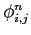
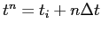
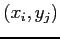

Next: Electric Field Calculation
Up: The Non-Stationary Poisson Equation
Previous: The Non-Stationary Poisson Equation
Contents
In the context of finite-difference approximations, we can trivially write
where

is the potential computed at time

, in the point 
.
Applying these approximations to the NSP equation, one get the following numerical scheme
![$\displaystyle \phi^{n+1}_{i,j} = \phi^n_{i,j} + \Delta t (- \epsilon_{i,j} (\fr...
...}^n}{\Delta y^2}) \\ - q [ {N_D}_{i,j} - {N_A}_{i,j} - n_{i,j}^n + p_{i,j}^n] )$](img136.png) |
(6.9) |
Note that the presented scheme is valid only in the case of homogeneous case, but it is easy to generalize it to the heterogeneous structures.
As we can see, once we have the initial conditions and the boundary conditions, it is very easy to implement this equation in a generic semiconductor devices simulator, as it is done in GNU Archimedes.
Didier Link
2007-05-18